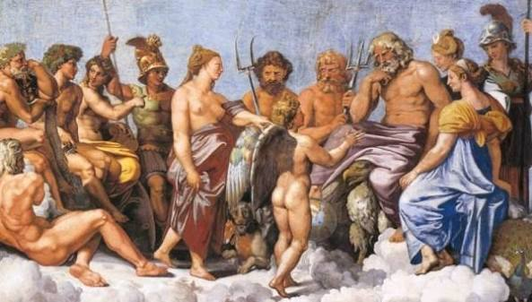
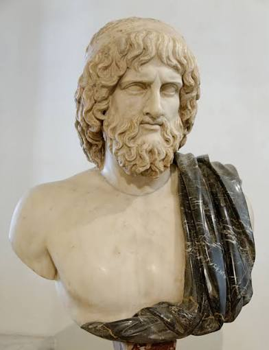
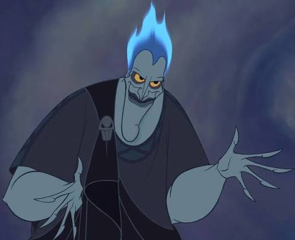
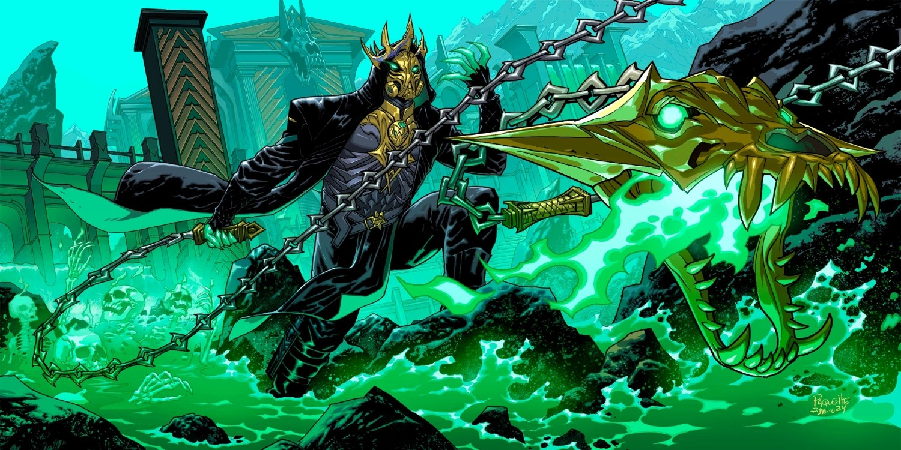
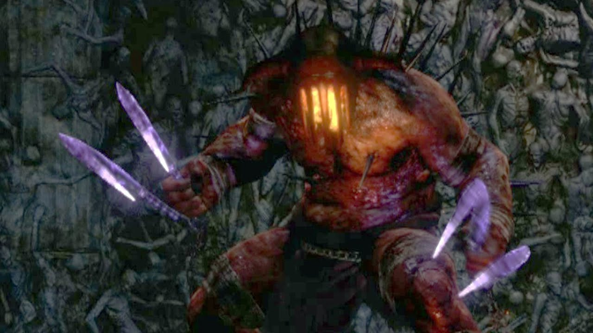
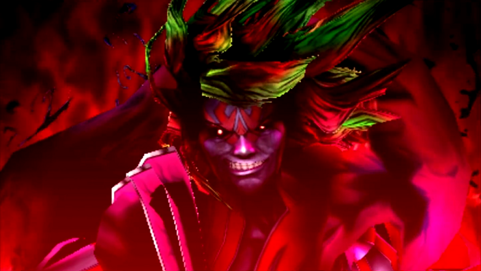
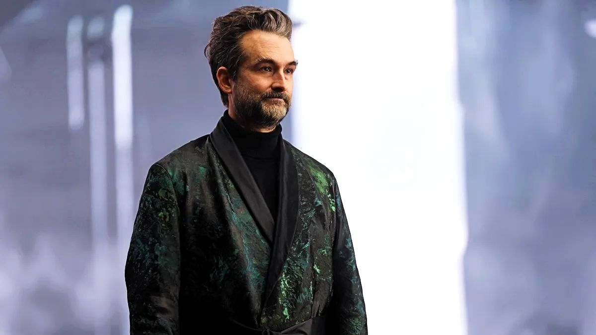
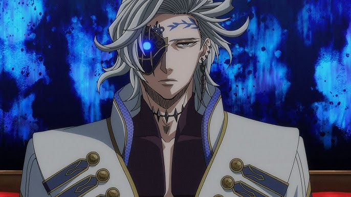

Hades
Introdução
A mitologia grega é o conjunto de mitos, lendas e crenças dos gregos antigos, criado com o objetivo de explicar fenômenos sem explicação.A mitologia grega foi fundamental para a religiosidade, arte, literatura e filosofia da Grécia Antiga, exercendo grande influência no pensamento ocidental.
Dentre as lendas da mitologia grega existem monstros, titãs, traições guerras,coisas bizarras e principalmente deuses,muitos inclusive, hoje falaremos falaremos do deus do submundo hades

História

Hades é filho do Titã Cronos (deus do tempo) com a reia(deusa da fertilidade), o pobre coitado foi engolido pelo própio pai logo quando nasceu e só foi sair depois de adulto para ajudar seu irmão Zeus em uma guerra contra os titãs.Depois da guerra ele se tornou o deus do submundo,que era o trabalho que ninguém queria, após um sorteio feito com seus irmãos,desde então Hades vive no centro da terra com seu cachorro de 3 cabeças Cerberus cuidando das almas dos mortos

Poderes
- invisbilidade
- controle sobre almas
- necromancia
- posse total sobre o submundo
Simbolismos
- seu elmo
- Seu cachorro Cerberus
- Sua arma o Bidente
Referências conteporâneas
Hades é um dos deuses mais populares na mitologia grega por conta visual marcante, seus poderes e pelo o que ele representa e por causa de toda essa popularidade ele possui diversas aparições em jogos, filmes, séries e livros.
Hoje apresentaremos suas melhores aparições na mídia
Disney:

Hades é o principal antagonista do filme de animação da Disney, Hércules (1997), conhecido por ser o sarcástico e impaciente Senhor do Submundo. Inspirado na mitologia grega, mas reinventado como um vilão cômico e carismático, ele busca derrubar Zeus e dominar o Olimpo, frequentemente auxiliado por seus lacaios Agonia e Pânico.
Fortnite

A skin do Hades no Fortnite foi introduzida no Capítulo 5, Temporada 2 (Mitos e Mortais), com um visual temático e sombrio do submundo. Ele é uma das skins de destaque do Passe de Batalha dessa temporada, apresentando um design moderno e imponente, com estilos que incluem armadura, tons de verde/preto e uma máscara.
God of War

Hades é o Deus do Submundo na série God of War, irmão de Zeus e Poseidon, e um dos principais antagonistas em God of War III. Ele é um governante cruel e poderoso que controla as almas dos mortos. Hades foi fundamental na Grande Guerra contra os Titãs, mas acaba sendo morto por Kratos.
Kid Icarus

Hades é o verdadeiro vilão de Kid Icarus: Uprising (Nintendo 3DS) e um dos antagonistas mais memoráveis da Nintendo.
Totalmente extravagante e sarcástico, ele passa o jogo quebrando a quarta parede e provocando os heróis (Pit e Palutena) com piadas sobre os controles e clichês de videogame.
Percy jackson e os olimpianos

Hades, interpretado por Jay Duplass na série Disney+, é o temido deus do Mundo Inferior em Percy Jackson e os Olimpianos. Como o mais velho dos "Três Grandes" e filho de Cronos, ele governa as riquezas e os mortos, não sendo intrinsecamente mau, mas justo e severo. Pai de Nico e Bianca di Angelo, ele vive afastado do Olimpo. [1, 2, 3]
Record of Ragnarok

Hades em Record of Ragnarok (Shuumatsu no Valkyrie) é o Rei do Submundo (Helheim) e o irmão mais velho de Zeus e Poseidon. Ele entra no torneio na 7ª rodada para enfrentar o imperador chinês Qin Shi Huang.
Copyright2026©